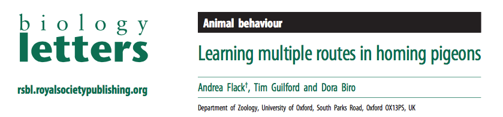
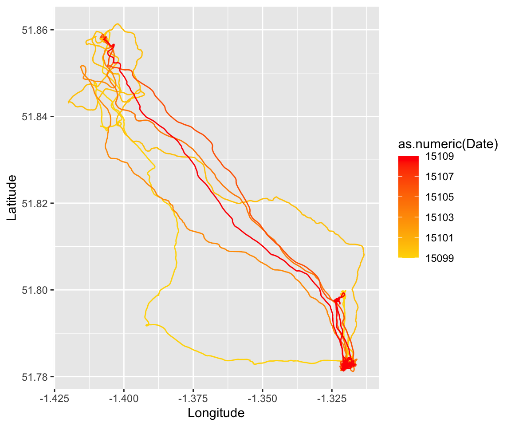
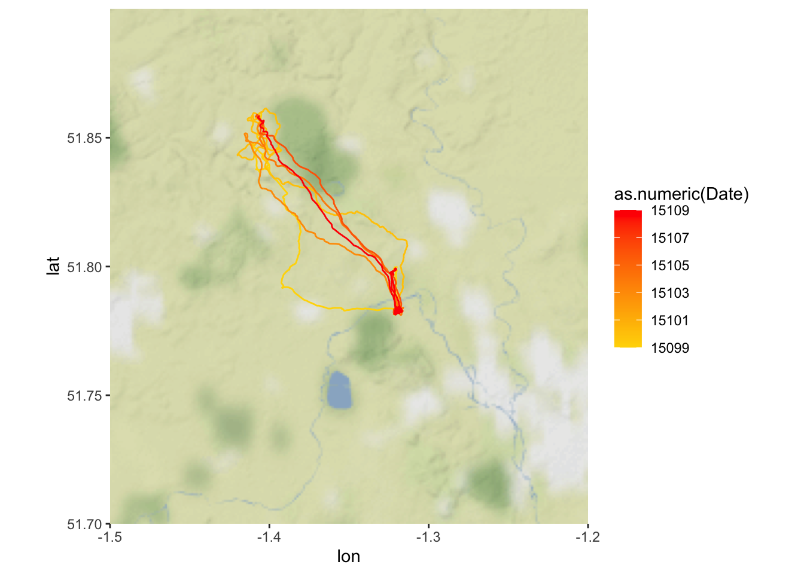
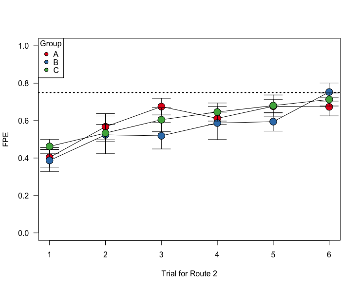

Module 10. Batch Processing:
How Pigeons Learn Routes
Dai Shizuka
updated 10/11/22

Today, we will be using a study from Flack, Guilford and Biro (2014) called Learning multiple routes in homing pigeons http://dx.doi.org/10.1098/rsbl.2014.0119. You can also download the paper as pdf here.
In this study, the researchers trained pigeons to home from three different release sites. Each individual was trained on each route 6 times. There were three different training methods: (A) ‘sequential site training’: each individual gets released 6 consecutive trials at each release site, (B) ‘rotation training’: each individual is relased at different sites sequentially, and rotating through the three sites, and (C) ‘random training’: individual is released at different sites in semi-random order. The goal was to determine if these training regimes had different effects on the route learning speed of individuals.
I have chosen this study because (1) it’s super interesting and (2) the complete associated data on each trial for each individual has been made available. This will make for a great exercise on how to batch process multiple data files in R.
12.1 Download the data files
Go to the Dryad database for the associated data files: http://dx.doi.org/10.5061/dryad.j444n.
Go ahead and download the entire .zip file to your computer.
Unzip and save the folder within the “data” subfolder in your Rprojects folder.
Here is a visualization of the folder structure of the data inside your data subfolder:

You can see that there is a nested set of folders. The first three folders (R1, R2, and R3) represents the three routes that each individual was trained on. Inside each of these folders, there are separate folders for each individual bird. The first letter of the foler represents the training regime (e.g., “A_A35” means that individual went through protocol “A”: the sequential-site training). Inside that folder are separate data files for each trial.
Now, we will learn how to navigate through this type of folder structure and import sets of data.
12.3 Extracting information from file names using
substr() and assembling metadata
In a well-organized data set, the file names often contains useful information that can be interpreted when reading in the files. For example, let’s look at the file names of the R1 results from individual A35 again:
list.files("data/Flack et al_Biology Letters/R1/A_A35")## [1] "A_A35_R1_01.csv" "A_A35_R1_02.csv" "A_A35_R1_03.csv" "A_A35_R1_04.csv"
## [5] "A_A35_R1_05.csv" "A_A35_R1_06.csv"We can see that we can get four pieces of information here:
- The experimental treatment (“A”)
- Individual ID (“A35”)
- Route (“R1”)
- Trial number (“01”, “02”, etc.)
Let’s extract this information and organize it as a dataframe.
The first step is to use the substr() function to extract
pieces of the file names. This function takes a character string and
returns the characters given at the specified positions. The syntax is
substr(x, start, stop)
For example, to get the treatment group, simply get the first character of the file name:
group = substr(list.files("data/Flack et al_Biology Letters/R1/A_A35"), 1, 1)
group## [1] "A" "A" "A" "A" "A" "A"Now get the rest of the info and assemble a dataframe:
id = substr(list.files("data/Flack et al_Biology Letters/R1/A_A35"), 3, 5)
route = substr(list.files("data/Flack et al_Biology Letters/R1/A_A35"), 7, 8)
trial = substr(list.files("data/Flack et al_Biology Letters/R1/A_A35"), 10,
11)
metadata = data.frame(group = group, id = id, route = route, trial = trial)
metadata## group id route trial
## 1 A A35 R1 01
## 2 A A35 R1 02
## 3 A A35 R1 03
## 4 A A35 R1 04
## 5 A A35 R1 05
## 6 A A35 R1 06Now let’s do this for ALL individuals in the R1 folder. To list all
of the files in all folders within “R1”, we can nest the
list.file() function within another
list.file() function:
list.files(list.files("data/Flack et al_Biology Letters/R1/", full.name = T))result not shown because it’s too long
So we can assemble the whole metadata for Route 1 as:
all.files = list.files(list.files("data/Flack et al_Biology Letters/R1/", full.name = T))
group = substr(all.files, 1, 1)
id = substr(all.files, 3, 5)
route = substr(all.files, 7, 8)
trial = substr(all.files, 10, 11)
metadata.R1 = data.frame(group = group, id = id, route = route, trial = trial)metadata.R1results not shown because it’s too long…
12.4 Analyzing performance of individuals over repeated trials
12.4.1 Importing data for each individual for each route
Now that we have learned a bit about how to deal with file names, we
are ready to import datasets in batches!
First, let’s try importing all of the data for a given bird on a given
route. This means we will import all 6 .csv files within an individual
folder within the “R1” folder, like this. To do this, we can use the
lapply() function, and we just need to use the .csv file
paths as the elements:
dats.R1A35 = lapply(list.files("data/Flack et al_Biology Letters/R1/A_A35",
full.name = T), function(x) read.csv(x))
summary(dats.R1A35)## Length Class Mode
## [1,] 10 data.frame list
## [2,] 10 data.frame list
## [3,] 10 data.frame list
## [4,] 10 data.frame list
## [5,] 10 data.frame list
## [6,] 10 data.frame listYou can see that the dats.R1A35 object now contains 6
data frames with 10 columns each. Let’s look at the first of those data
frames:
head(dats.R1A35[[1]])## Date Time Latitude Longitude Altitude Speed Course Type Distance
## 1 2011/05/05 12:25:22 51.85829 -1.406301 111.61 216 217 -2 0.00
## 2 2011/05/05 12:25:23 51.85827 -1.406295 115.00 180 234 0 2.48
## 3 2011/05/05 12:25:24 51.85829 -1.406339 116.07 0 262 0 3.89
## 4 2011/05/05 12:25:25 51.85829 -1.406339 116.07 0 315 0 0.00
## 5 2011/05/05 12:25:26 51.85829 -1.406339 116.07 0 333 0 0.00
## 6 2011/05/05 12:25:27 51.85829 -1.406339 116.07 0 32 0 0.00
## Essential
## 1 1
## 2 NA
## 3 NA
## 4 NA
## 5 NA
## 6 NAYou can see that each of those data frames contain the GPS position (Latitude and Longitude) of each individual each second during the trial. Thie means that we have the complete data for each individual down to the second!
12.4.2 Plotting the routes for successive trials
With the data we have organized, we can draw the route that the bird took in each trial using these latitudes and longitudes. Let’s try that:
with base R plotting
# Use RColorBrewer color set that 'PuBu' (purple to blue)
new.palette = brewer.pal(length(dats.R1A35), "PuBu")
# set the extremes of the plotting ranges: 0.01 degrees beyond the
# starting and ending points
lats = c(min(dats.R1A35[[1]]$Latitude) - 0.01, max(dats.R1A35[[1]]$Latitude) +
0.01)
longs = c(min(dats.R1A35[[1]]$Longitude) - 0.01, max(dats.R1A35[[1]]$Longitude) +
0.01)
# establish empty plot, and then draw line for each trajectory
plot(longs, lats, type = "n", las = 1, xlab = "Longitude", ylab = "Latitude")
for (i in 1:length(dats.R1A35)) {
points(dats.R1A35[[i]]$Longitude, dats.R1A35[[i]]$Latitude, type = "l",
col = new.palette[i])
}
legend("topright", legend = 1:6, title = "Trial", lty = 1, lwd = 2, col = new.palette,
cex = 0.8)with ggplot
To make the same plot using ggplot2, we need to first combine the
dataframes in the list into a single dataframe (i.e., all data for that
individual for that route). To do this, we will use the function
do.call(), which takes a function as input and then
executes it on a list as a whole. The only time I’ve ever used this
function is to use it to collapse a list of data frames into a single
data frame:
all.dat.R1A35 = do.call("rbind", dats.R1A35)Now, we can use the geom_path() function (Note: NOT
geom_line()) in ggplot2 to plot longitude on x-axis, latitude on y-axis,
grouping the data by Date, and coloring the lines using those dates on a
scale from “gold” to “red”.
p = ggplot() + geom_path(aes(x = Longitude, y = Latitude, group = Date, colour = as.numeric(Date)),
data = all.dat.R1A35) + scale_colour_gradient(low = "gold", high = "red")
p## Warning in FUN(X[[i]], ...): NAs introduced by coercion
with ggmap
We can make this even fancier, and overlay these results on a terrain map using the package ‘ggmap’:
# use the get_map() function to download a map centered on the mean
# long/lat position of the bird, with a given zoom factor
location = c(long = mean(longs), lat = mean(lats))
map = get_stamenmap(location, bbox = c(left = -1.5, bottom = 51.7, right = -1.2,
top = 51.9), zoom = 10, source = "stamen", maptype = "terrain-background",
filetype = "png")## Source : http://tile.stamen.com/terrain-background/10/507/338.png## Source : http://tile.stamen.com/terrain-background/10/508/338.png## Source : http://tile.stamen.com/terrain-background/10/507/339.png## Source : http://tile.stamen.com/terrain-background/10/508/339.png## Warning in if (!crop) {: the condition has length > 1 and only the first element
## will be used## Warning in if (crop) {: the condition has length > 1 and only the first element
## will be used# now add this map as the base, and then plot the geom_path on top of it.
map_lines = ggmap(map) + geom_path(aes(x = Longitude, y = Latitude, group = Date,
colour = as.numeric(Date)), data = all.dat.R1A35) + scale_colour_gradient(low = "gold",
high = "red")
map_lines## Warning in FUN(X[[i]], ...): NAs introduced by coercion
- Note: You used to be able to directly plot onto a google map, but this now requires an API key. It’s possible to do this for free but I’m not going to go through this in this tutorial.
###12.4.3 Calculating the distance traveled over successive trials
Now let’s get down to the data. The main focus here is to figure out
how pigeons improve the efficiency of their route over successive
attempts. In this study, they use a metric they call “Flight Path
Efficiency” (FPE), defined as the straight path distance divided by the
travelled distance.
For Route 1, we know that the straight path distance = 10.4km, or
10,400m (from text). What we need to know is how many meters the pigeon
travelled during each trial.
Now, we COULD calculate the distance travelled each second from just the change in GPS position of the bird at each time step… but the authors have been kind enough to actually include that data in their .csv files. This is the “Distance” column in their data set, and the unit is meters.
head(dats.R1A35[[1]])## Date Time Latitude Longitude Altitude Speed Course Type Distance
## 1 2011/05/05 12:25:22 51.85829 -1.406301 111.61 216 217 -2 0.00
## 2 2011/05/05 12:25:23 51.85827 -1.406295 115.00 180 234 0 2.48
## 3 2011/05/05 12:25:24 51.85829 -1.406339 116.07 0 262 0 3.89
## 4 2011/05/05 12:25:25 51.85829 -1.406339 116.07 0 315 0 0.00
## 5 2011/05/05 12:25:26 51.85829 -1.406339 116.07 0 333 0 0.00
## 6 2011/05/05 12:25:27 51.85829 -1.406339 116.07 0 32 0 0.00
## Essential
## 1 1
## 2 NA
## 3 NA
## 4 NA
## 5 NA
## 6 NASo, we simply need to sum the values of this column to get the actual distance travelled:
sum(dats.R1A35[[1]]$Distance)## [1] 37881.73Now, we just need to calculate the sum of the distance for each data
set in the list dats.R1A35. We can use the
sapply() function for this!
dist.R1A35 = sapply(dats.R1A35, function(x) sum(x$Distance))
plot(dist.R1A35/1000, pch = 19, type = "o", las = 1, xlab = "Trial", ylab = "Distance Travelled (km)")
We can plot this as FPE, using 10.4km as the straigh-line distance:
fpe.R1A35 = 10400/dist.R1A35
plot(1:6, fpe.R1A35, pch = 19, type = "o", las = 1, xlab = "Trial", ylab = "FPE")12.4.4 Calculate and plot FPE across trials for all individuals for Route 1
Ok, here is where it gets challenging. Now what we want to do is calculate the total distance travelled for each bird for each trial on Route 1. For reasons that will become clearer later, we are going to do this as a list of a list, which will replicate the file structure of the dataset we are playing with:
all.files.R1 = list.files(list.files("data/Flack et al_Biology Letters/R1/",
full.name = T), full.name = T)
all.R1 = lapply(all.files.R1, function(x) read.csv(x))distances = sapply(all.R1, function(x) sum(x$Distance))
head(distances)## [1] 37881.73 28738.05 15015.55 21837.51 20811.76 22663.92We can simply add this data to the metadata.R1 data
frame we created in Section 12.3.3. We can also calculate that FPE based
on those distances.
metadata.R1$distance = distances
metadata.R1$fpe = 10400/metadata.R1$distance
head(metadata.R1)## group id route trial distance fpe
## 1 A A35 R1 01 37881.73 0.2745387
## 2 A A35 R1 02 28738.05 0.3618896
## 3 A A35 R1 03 15015.55 0.6926153
## 4 A A35 R1 04 21837.51 0.4762448
## 5 A A35 R1 05 20811.76 0.4997175
## 6 A A35 R1 06 22663.92 0.4588791Now, it’s just a matter of plotting these FPE values by group.
Plot all individuals by group
Here is one way:
groups = c("A", "B", "C")
layout(matrix(1:3, ncol = 1))
par(mar = c(4, 4, 2, 4))
for (i in 1:3) {
plot(fpe ~ as.numeric(trial), data = subset(metadata.R1, group == groups[i]),
cex = 2, pch = 21, bg = gray(0.5, 0.5), ylim = c(0, 1), las = 1, ylab = "FPE",
xlab = "Trial", main = paste("Group", groups[i]))
}
This is essentially what is plotted in panels (g)-(i) in Figure 1.
Plot group means and standard errors
Here, we will plot a slightly different from of Figure 1 panels (d)-(f). To do this, we first have create summary data–for each group and trial, we will calculate the mean and s.e.m. of FPE (flight path efficiency).
se = function(x) sqrt(var(x)/length(x))
summ.dat = metadata.R1 %>%
group_by(group, trial) %>%
summarise(mean.fpe = mean(fpe), se.fpe = se(fpe))## `summarise()` has grouped output by 'group'. You can override using the
## `.groups` argument.summ.dat$trial = as.numeric(summ.dat$trial)
head(summ.dat)## # A tibble: 6 × 4
## # Groups: group [1]
## group trial mean.fpe se.fpe
## <chr> <dbl> <dbl> <dbl>
## 1 A 1 0.314 0.0553
## 2 A 2 0.363 0.0421
## 3 A 3 0.488 0.0468
## 4 A 4 0.604 0.0420
## 5 A 5 0.508 0.0407
## 6 A 6 0.506 0.0705Then, we can plot these data in a single plot. The following code is annotated:
# set up groups and colors
groups = c("A", "B", "C")
colors = brewer.pal(3, "Set1")
# generate empty plot with the appropriate axes (1 through 6 on x-axis, 0
# to 1 on y=axis). Draw a dotted line along FPE = 0.75 for comparison
# purposes
plot(1:6, seq(0, 1, length = 6), type = "n", las = 1, ylab = "FPE", xlab = "Trial for Route 1")
abline(h = 0.75, lty = 3, lwd = 2)
# using a loop function, subset the data by treatment group, then plot the
# standard error bars and means. Use different colors for different
# treatment groups.
for (i in 1:3) {
use.dat = subset(summ.dat, group == groups[i])
arrows(use.dat$trial, use.dat$mean.fpe - use.dat$se.fpe, use.dat$trial,
use.dat$mean.fpe + use.dat$se.fpe, angle = 90, code = 3, length = 0.1)
points(mean.fpe ~ trial, data = use.dat, type = "o", cex = 2, pch = 21,
bg = colors[i])
}
# add legend
legend("topleft", legend = c("A: Sequential", "B: Rotation", "C: Random"), pch = 21,
pt.bg = colors, title = "Group", cex = 0.8)What’s really interesting here is that Treatements B & C perform better than Group A by the 5th and 6th release. By that point, the individuals in groups B and C have the same experience with this particular route as individuals in group A, but they have experienced more releases overall.
Same plot with ggplot:
p = ggplot(summ.dat, aes(x = trial, y = mean.fpe, color = group)) + geom_point(size = 3) +
geom_line() + geom_errorbar(aes(ymin = mean.fpe - se.fpe, ymax = mean.fpe +
se.fpe), width = 0.3)
pThis result doesn’t necessarily hold up for Routes 2 and 3 though, possibly because the “group A” birds have had enough general practice in finding homing routes.
